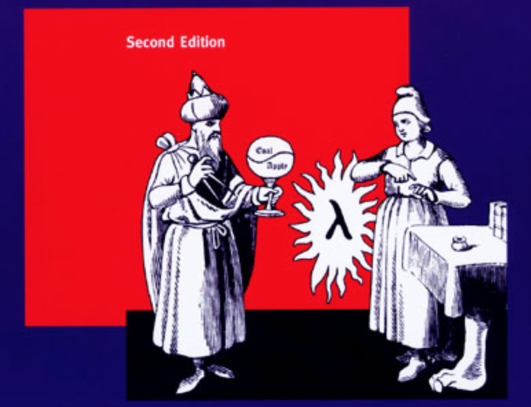

Aug 24, 2018

记得大二学C++的时候，老师对我们说面向对象最重要的就三点，抽象、继承与封装。但其实抽象却不是面向对象编程中特有的概念，抽象是编程世界最重要的概念之一，因为编程的过程其实就是使用编程语言描述现实世界的过程，而在这个过程中，最重要的过程之一就是对现实世界进行抽象，将其变成一个个抽象的模型。
SICP的第一章使用了几个例子来描述了代码的抽象过程。
一开始我们的需求很简单，就是求[a, b]区间上所有整数的和，于是有了以下函数：
过一会我们又有了新的需求，求[a, b]区间上所有整数的平方和，于是又有了以下函数：
接下来我们还会有更多类似的需求，比如求[a, b]区间上的立方和，比如我们要计算如下序列的值（该序列会缓慢地向\(\pi /8\)收敛）：
\[ \frac{1}{1 * 3} + \frac{1}{5 * 7} + \frac{1}{9 * 11} + ... \]
仔细观察可以发现，上面的三个函数都满足同一种模式，我们可以从中抽象出一个模板函数：
实际上，这个抽象出来的模板函数，就是数学家们在很久之前发明出来的sigma notation，也就是：
\[ \sum_{n = a}^{b} f(n) = f(a) + ... + f(b) \]
注意在上面的代码中，我们缺少term以及next的定义，它们都是函数，分别代表要对当前数字要进行的操作，与获取下一个数字的方法。这里我们可以将这两个函数作为参数传入，这也是Lisp的优雅之处。下面是一个符合Lisp语法要求的模板：
这样一来，我们就可以将我们之前的三个函数分别使用该模板来改写：
(define (sum-integers a b)
(sum
(lambda (x) x)
a
(lambda (x) (+ x 1))
b))
(define (sum-squares a b)
(sum
(lambda (x) (* x x))
a
(lambda (x) (+ x 1))
b))
(define (pi-sum a b)
(sum
(lambda (x) (+ (/ 1.0 (* x (+ a 2)))))
a
(lambda (x) (+ x 4))
b))可以看到，函数简洁且易读了很多，这就是抽象的力量。
\[ \prod_{n = a}^{b} f(n) = f(a) * ... * f(b) \]
与求和类似，我们也可以轻易地定义一个乘积的模板，只需将求和模板中的+改为*即可：
如果仔细观察的话，我们可以对模板sum和product再抽象成一个更高级的模板，就叫它accumulate吧：
(define (accumulate combiner null-value term a next b)
(if (> a b)
null-value
(accumulate combiner (combiner (term a) null-value) term (next a) next b)))然后再重新定义一下sum和product：
(define (product term a next b)
(accumulate
*
1
term
a
next
b))
(define (sum term a next b)
(accumulate
+
0
term
a
next
b))又是一次成功的抽象，但是我们却会发现，这个更高级的抽象并没有给代码带来多大的提升，既没有使代码更精简，也没有使代码更可读。
一味地追求更高级的抽象并不是什么好事，很多纯粹的东西看起来很美，但是却无法在现实世界中立足。作为一个工程师，一个engineer，终究还是要以解决问题为主要目标的，在各种复杂条件下达成完美的妥协，又会有一种平衡之美，那是另一种不亚于纯粹之美的美好。
大三上软件工程的时候，某个我认为非常没水平的老师说软件工程的精髓在于trade-off，我觉得这也许是他说过最有水平的一句话了吧 :)
(The End)
[Return to the homepage]